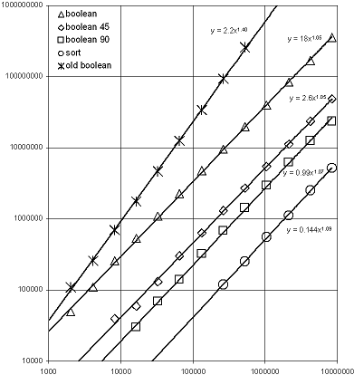

目录
- Boost.Polygon 主页
- 设计概述
- 各向同性
- 坐标概念
- 区间概念
- 点概念
- Segment 概念
- 矩形概念
- Polygon 90 概念
- 带孔 Polygon 90 概念
- Polygon 45 概念
- 带孔 Polygon 45 概念
- 多边形概念
- 带孔多边形概念
- Polygon 90 集合概念
- Polygon 45 集合概念
- 多边形集合概念
- 90 度连通性提取
- 45 度连通性提取
- 连通性提取
- 90 度属性合并
- 45 度属性合并
- 属性合并
- Voronoi 主页
- Voronoi 基准测试
- Voronoi 构建器
- Voronoi 图
其他资源
Polygon 赞助者

多边形集合算法分析
Boost.Polygon 库中大多数非平凡算法都是通用扫描线 (sweep-line) 算法的实例化, 这些算法能够执行 Manhattan 与 45 度线段相交、n 层地图叠加、连通图提取以及裁剪/布尔运算. 对于 n 等于输入顶点数加上交点顶点数的情形, 这些算法具有 O(n log n) 的运行期复杂度. 任意角度线段相交算法并未实现为扫描线算法, 原因在于实现数值稳健性存在诸多困难. 通用线段相交算法实现为一种递归的自适应启发式分治法: 先沿 y 维度进行划分, 再在各子区间内按 x 坐标对线段排序并从左到右扫描. 通过对问题空间在 x 与 y 两个维度上的一维分解, 该算法在常见情形下可逼近最优的 O(n log n) Bentley-Ottmann 线段相交运行期复杂度. 某些使问题空间无法进行一维分解的特定输入示例可能导致病态的二次方运行期复杂度, 而 Bentley-Ottmann 算法对此免疫.
下图为输入规模按二次方增长的输入的运行时间随输入规模变化的对数-对数曲线图. 输入的生成方式是: 针对每次试验, 在与所指定矩形数量成正比的正方形区域内伪随机地散布小尺寸轴平行矩形. 这样, 随着输入规模增大, 产生交集的概率保持恒定. 由于交点顶点数预期为输入顶点数的常数倍, 我们可以按输入顶点数来考察运行期复杂度. 所执行的操作是由 Manhattan、45 度与任意角度布尔算法分别对输入矩形求并集 (布尔 OR), 分别标记为 "boolean 90"、"boolean 45" 和 "boolean". 图中还展示了在引入分治递归划分之前任意角度布尔算法的性能, 相关描述见 论文, 该论文 发表于 boostcon 2009. 最后, 图中还给出了对输入点排序所需的时间, 作为 O(n log n) 运行期的公共参照, 以便为数据提供背景.

从对数-对数曲线图可以看到, 排序与 Boost.Polygon 库提供的三种布尔算法都呈现出接近 45 度的"线性"缩放, 经验指数仅略大于 1.0, 并且对这类输入可观察到与 O(n log n) 成正比的缩放. boostcon 2009 上展示的"旧布尔"算法则表现出接近预期的 O(n1.5) 的缩放. 由于分治方法带来的加速是算法层面的, 论文中暗示的 10 倍潜在性能提升在输入达到 200,000 个矩形及以上时得以实现. 即使对于 2K 矩形这样的小规模输入, 该算法也快 2 倍, 并且现在可以预期其在大规模下算法上更快, 在小规模下大致与 GPC 一样快.
通过该曲线图, 我们可以将各种布尔算法的常数因子性能与 std::sort 的运行时间进行比较, 后者是 O(n log n) 算法的基准. 如果将排序视为一个单位的 O(n log n) 算法工作量, 可以看到 Manhattan 布尔运算耗费约五个单位的 O(n log n) 工作量, 45 度布尔运算耗费约十个单位, 任意角度布尔运算耗费约七十个单位. 对输入顶点排序是布尔算法的第一步, 因而为最优布尔算法的运行时间提供了硬性下界.
关于任意角度布尔算法的性能还有最后一点值得注意: 通过包含 boost/polygon/gmp_override.hpp 并链接 lgmpxx 和 lgmp, 即可使用 GMP 无限精度有理数数据类型进行数值稳健的计算. 这可以 100% 保证算法成功执行, 并输出对齐到整数网格的结果, 在引入了交点的多边形边界上误差至少为一个整数网格. 然而, 无限精度数据类型从不用于谓词判断 (稳健谓词的描述参见 boostcon 演示文稿或论文), 只在极少数情况下——即对两条线段求交的 long double 计算未能产生位于两条线段各自一个整数单位之内的交点时——用于构造交集坐标值. 这意味着使用无限精度来保证 100% 稳健性实际上没有运行期开销. 大多数输入都能在不借助 GMP 的情况下通过算法处理.
| 版权: | 版权所有 © Intel Corporation 2008-2010. |
|---|---|
| License: | 按 Boost 软件许可 1.0 版 (Boost Software License, Version 1.0) 分发. (随附文件 LICENSE_1_0.txt 或复制于 http://www.boost.org/LICENSE_1_0.txt) |